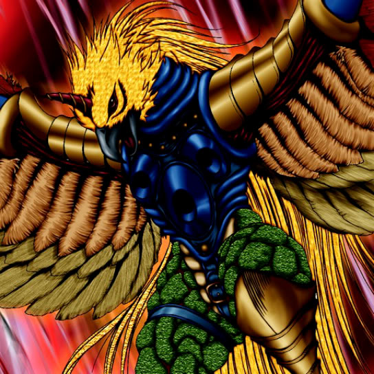

Birdface

Description: "While this card is face-up in the defense position, all your WINGED-BEAST monsters are awarded a power-up bonus of 300 points."
STATS
ATK: 1600
DEF: 1600DECK COST
Deck Cost per Card: 37EFFECT NOT IMPLEMENTED
Fusion List (1 Possible Fusions)
- Birdface + Swordstalker = Punished Eagle